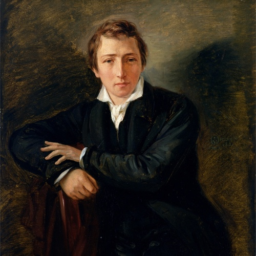

<title>Heinrich Heine</title>
<style>*{
	font-family: Helvetica;
	font-weight: 300;
}
 
main{
	text-align: justify;
	width: 100%;
	font-size: 17px;
	line-height: 1.4; 
}

@media (min-width:17cm){
	main{
		width: 17cm;
		margin: 0 auto;
	}
}

a {
	text-decoration: none;
	color: black;
}

table td:first-child{
	color: silver;
}

h1{
	margin: 12mm 0 4mm 0;
}
h2{
	margin: 8mm 0 4mm 0;
}</style>

<style>.bio p {display: none;}
.bio p:nth-child(2){display: block;}
.bio img {width: 40%; float: right; padding: 0 0 3mm 3mm;}</style>

<main>
<h1>Heinrich Heine</h1><div class='bio'>
<p>Christian Johann Heinrich Heine (* 13. Dezember 1797 als Harry Heine in Düsseldorf, Herzogtum Berg; † 17. Februar 1856 in Paris) war einer der bedeutendsten deutschen Dichter, Schriftsteller und Journalisten des 19. Jahrhunderts.
Heine gilt als „letzter Dichter der Romantik“ und zugleich als deren Überwinder. Er machte die Alltagssprache lyrikfähig, erhob das Feuilleton und den Reisebericht zur Kunstform und verlieh der deutschen Literatur eine zuvor nicht gekannte elegante Leichtigkeit. Die Werke kaum eines anderen Dichters deutscher Sprache wurden bis heute so häufig übersetzt und vertont. Als kritischer, politisch engagierter Journalist, Essayist, Satiriker und Polemiker war Heine ebenso bewundert wie gefürchtet. Wegen seiner jüdischen Herkunft und seiner politischen Haltung wurde er von Antisemiten und Nationalisten über seinen Tod hinaus angefeindet. Die Außenseiterrolle prägte sein Leben, sein Werk und dessen Rezeptionsgeschichte.</p>
</div>
</main>
